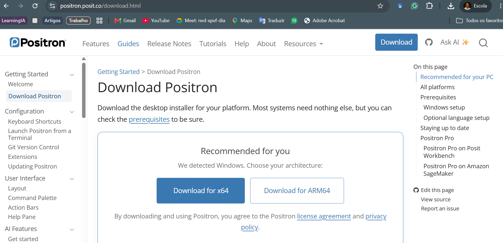
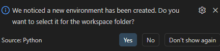
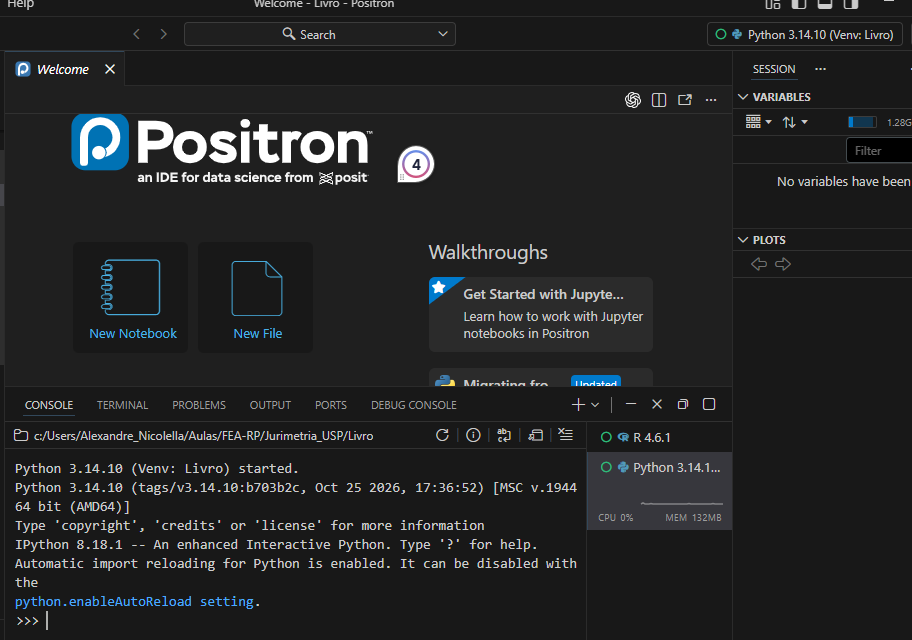
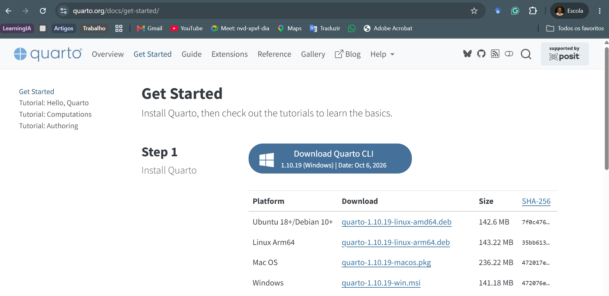
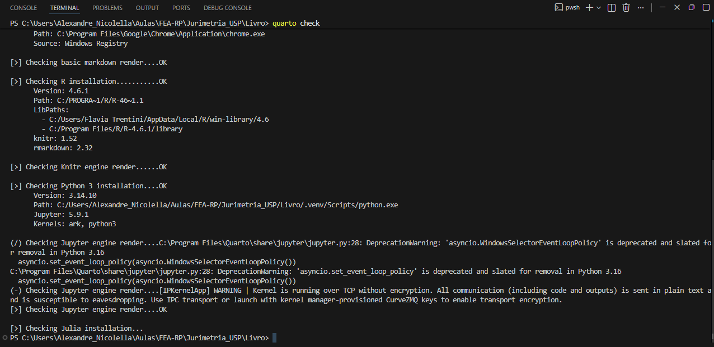
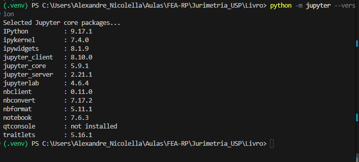

flowchart LR
A["R ou Python<br/>executam o código"] --> B["Positron<br/>organiza o trabalho"]
B --> C["Arquivo .qmd<br/>texto e código"]
C --> D["Quarto<br/>renderiza"]
D --> E["HTML, PDF ou Word"]
classDef principal fill:#E8EEF5,stroke:#415A77,stroke-width:2px,color:#233F56;
classDef resultado fill:#F4E9D7,stroke:#B49A68,stroke-width:2px,color:#233F56;
class A,B,C,D principal;
class E resultado;
7 Positron e Quarto: ambiente de trabalho e documentos reproduzíveis
Da escrita do código à produção do relatório
7.1 Introdução
R e Python são linguagens utilizadas para representar procedimentos de pesquisa. Para escrever, executar e organizar esses procedimentos, utilizaremos o Positron como ambiente integrado de desenvolvimento. Para reunir texto, código e resultados em um mesmo documento, utilizaremos o Quarto.
Essas ferramentas cumprem funções diferentes. O Positron organiza o trabalho no computador; o Quarto transforma arquivos-fonte em relatórios, páginas, apresentações e livros. A página que você está lendo foi produzida por esse tipo de integração.
NotaObjetivos do capítulo
Ao final deste capítulo, você deverá ser capaz de:
- distinguir linguagem, IDE e sistema de publicação;
- instalar e abrir o Positron no Windows;
- reconhecer editor, console, terminal, Explorer, objetos e gráficos;
- selecionar uma instalação de R ou Python;
- criar e selecionar um ambiente virtual de Python para o projeto;
- instalar e verificar o Quarto;
- compreender quando o Jupyter é necessário para executar Python em documentos Quarto;
- criar e renderizar um documento
.qmdmínimo; - distinguir o arquivo-fonte do arquivo HTML gerado.
7.2 Linguagem, IDE e sistema de publicação
O R e o Python interpretam e executam instruções. O Positron reúne os instrumentos utilizados para escrever essas instruções, acompanhar sua execução e navegar pelos arquivos do projeto. O Quarto lê um documento-fonte e produz a versão destinada à leitura.
Uma IDE não substitui as linguagens. É possível instalar o Positron sem ter R ou Python; nesse caso, a interface será aberta, mas ainda não haverá uma linguagem disponível para executar os respectivos códigos.
7.3 Instalação do Positron no Windows
O instalador deve ser obtido na página oficial do Positron. Para computadores Windows usuais com processador Intel ou AMD, selecione a versão Windows x64. A instalação por usuário atende, em regra, ao uso individual e não exige que todos os usuários do computador recebam a mesma instalação.
O procedimento é:
- baixar o instalador adequado à arquitetura do computador;
- executar o arquivo recebido;
- manter a opção de incluir o comando
positronnoPATH, quando apresentada; - concluir a instalação e abrir o programa.
No Windows, a documentação do Positron também recomenda manter atualizado o Microsoft Visual C++ Redistributable. O Positron exige uma versão compatível do R para iniciar uma sessão dessa linguagem; versões antigas podem ser encontradas no computador, mas desconsideradas pela IDE.

Na maior parte dos computadores Windows com processadores Intel ou AMD, utiliza-se a opção x64 mostrada na Figura 7.1. A opção ARM64 deve ser escolhida apenas quando o computador possuir essa arquitetura.
Para verificar se o comando foi disponibilizado no terminal, execute:
positron --versionTambém é possível abrir a pasta atual no Positron pelo terminal:
positron .O ponto representa a pasta em que o terminal está localizado.
7.4 Abrindo a pasta de trabalho
No Positron, a unidade de trabalho inicial é uma pasta. Use File > Open Folder e selecione a pasta principal do projeto. A pasta aberta aparece no topo do Explorer e funciona como referência para a navegação entre arquivos.
Abrir a pasta principal é diferente de abrir apenas um arquivo isolado. Quando a raiz está aberta, os caminhos relativos, o terminal e as ferramentas de controle de versão partem do mesmo contexto.
DicaComece pela raiz
Antes de escrever ou executar código, confirme no Explorer qual pasta ocupa o primeiro nível. Ela deve corresponder à pasta principal do trabalho que está sendo realizado.
7.5 Componentes do Positron

A Figura 7.2 identifica os componentes utilizados com maior frequência.
7.5.1 Explorer e raiz do projeto
O Explorer mostra as pastas e os arquivos. Seu primeiro nível indica a pasta aberta como raiz. Criar, mover ou renomear arquivos nesse painel altera os arquivos existentes no computador.
7.5.2 Editor
O editor contém os arquivos salvos, como scripts .R e .py, documentos .qmd e arquivos Markdown. Ele preserva a sequência do trabalho e permite revisar o conteúdo antes da execução.
7.5.3 Console
O console mantém uma sessão ativa de R ou Python. Ele recebe comandos dessas linguagens e apresenta resultados, mensagens, avisos e erros.
7.5.4 Terminal
O terminal recebe comandos do sistema operacional e de programas instalados, como Quarto e Git. Ele não deve ser confundido com o console da linguagem.
| Local | Comando esperado | Exemplo |
|---|---|---|
| Console de R | código R | mean(c(1, 2, 3)) |
| Console de Python | código Python | sum([1, 2, 3]) |
| Terminal | comando do sistema | python --version |
7.5.5 Objetos e gráficos
O painel Variables permite inspecionar objetos existentes na sessão. O painel Plots recebe gráficos produzidos pelo código. Esses painéis ajudam a acompanhar o trabalho, mas não substituem o registro das operações nos scripts.
7.6 Selecionando R ou Python
No canto superior direito do Positron, o seletor de interpretador informa qual linguagem e qual instalação serão utilizadas. Se houver mais de uma versão do R ou mais de um ambiente Python, a escolha deve ser feita explicitamente.
Para conferir a versão do R no console dessa linguagem:
R.version.stringPara conferir o executável Python da sessão:
import sys
print(sys.executable)
print(sys.version)Quando uma instalação de R não aparece, primeiro verifique se ela está em uma pasta padrão do Windows, como C:\Program Files\R. A indicação manual de um executável é uma medida de diagnóstico, não uma etapa obrigatória da instalação comum.
7.7 Ambiente virtual do Python no projeto
O interpretador é o programa que executa o código Python. A instalação principal disponibiliza um interpretador no sistema. Um ambiente virtual cria um espaço isolado que utiliza uma versão de Python e um conjunto próprio de pacotes.
Em regra, cria-se um ambiente virtual para cada projeto, e não para cada arquivo ou programa. Essa separação evita que a atualização exigida por um trabalho modifique o funcionamento de outro. A pasta do ambiente costuma receber o nome .venv e permanece na raiz do projeto.
O ambiente virtual não contém os códigos, os dados ou os documentos da pesquisa e não restringe o Python à pasta do projeto. Quando o ambiente está selecionado ou ativado, os comandos utilizam o interpretador e os pacotes associados àquele trabalho. Fora dele, o interpretador instalado no sistema continua disponível.
O ambiente de Python também é independente da sessão de R. O Positron pode manter uma sessão de R aberta e, ao mesmo tempo, utilizar uma .venv para executar códigos em Python.
7.7.1 Conferindo uma versão compatível
O Positron pode localizar uma versão do Python e ainda classificá-la como Unsupported. Isso significa que a instalação existe, mas não é compatível com a versão atual da IDE. No momento da preparação deste material, utilizamos Python 3.14. Para verificar as versões instaladas, abra o terminal integrado pelo menu Terminal > New Terminal e execute:
py listSe Python 3.14 não estiver disponível, instale-o pelo Python Install Manager:
py install 3.147.7.2 Criando o ambiente no terminal integrado
Em um projeto existente, abra sua pasta principal no Positron. Em um projeto novo, crie a pasta, abra-a com File > Open Folder e somente então prossiga. Use Terminal > New Terminal; não abra um terminal separado pelo menu Iniciar do Windows.
O terminal integrado pode apresentar PS no início da linha porque utiliza o PowerShell como shell no Windows. Antes de criar o ambiente, confirme a localização:
Get-LocationO caminho deve corresponder à raiz do projeto, e não a uma pasta do sistema como C:\Windows\System32. Em seguida, crie o ambiente explicitamente com Python 3.14:
py -V:3.14 -m venv .venvO comando cria a pasta .venv. Ao identificá-la, o Positron pode perguntar: “We noticed a new environment has been created. Do you want to select it for the workspace folder?”. Selecione Yes. Essa escolha associa o ambiente à pasta aberta no Positron e não encerra uma sessão de R que já esteja funcionando.

Para ativar o ambiente também no terminal integrado, execute:
.\.venv\Scripts\Activate.ps1Depois da ativação, o início da linha costuma apresentar (.venv). Verifique a versão e o executável utilizados:
python --version
python -c "import sys; print(sys.executable)"A primeira instrução deve informar Python 3.14. A segunda deve apresentar um caminho terminado em .venv\Scripts\python.exe.
7.7.3 Iniciando a sessão Python no Positron
Depois de criar o ambiente, use a Paleta de Comandos (Ctrl + Shift + P) e execute Interpreter: Discover All Interpreters. Em seguida, execute Interpreter: Start New Console Session e selecione o ambiente Python associado à pasta do projeto.
A sessão iniciada deve identificar Python 3.14 e a .venv do projeto, sem a classificação Unsupported. A Figura 7.4 mostra o resultado esperado e também registra que as sessões de Python e R permanecem disponíveis no mesmo ambiente de trabalho.

7.7.4 Ambiente virtual e controle de versões
A pasta .venv é reconstruível e não deve ser enviada ao repositório. O arquivo .gitignore, localizado na raiz do projeto, deve conter:
.venv/Essa regra mantém o ambiente no computador e impede que seus arquivos sejam incorporados ao controle de versões. O arquivo .gitignore, ao contrário, faz parte do projeto e deve ser preservado no repositório.
Para encerrar a ativação do ambiente naquele terminal, execute:
deactivate7.8 O que é o Quarto?
O Quarto é um sistema de publicação que combina prosa, referências, equações, tabelas, figuras e código executável. Seu arquivo-fonte possui a extensão .qmd. A renderização lê esse arquivo, executa os blocos autorizados e produz o formato definido no cabeçalho.
O livro em que este capítulo está inserido é um projeto Quarto. Seus capítulos são escritos em arquivos .qmd; a versão de leitura é formada pelos arquivos HTML produzidos durante a renderização.
7.9 Instalação e verificação do Quarto
No Windows, baixe o instalador .msi na página oficial de instalação do Quarto e conclua o assistente. A Figura 7.5 mostra onde localizar o instalador para Windows. Feche e reabra o terminal após a instalação.

Primeiro, confirme que o comando está disponível:
quarto --versionDepois, execute a verificação geral:
quarto checkO primeiro comando informa apenas a versão instalada. O segundo examina a instalação do Quarto e as integrações encontradas no computador, como R, knitr, Python e Jupyter. Nem todas essas integrações são obrigatórias: o resultado esperado depende das linguagens que o projeto utiliza. A Figura 7.6 mostra uma verificação em um projeto que utiliza R e Python.

7.9.1 Jupyter para documentos Quarto com Python
A sessão Python do Positron não exige uma instalação separada do Jupyter. Para versões compatíveis do Python, o Positron fornece o kernel necessário para iniciar o console. Por isso, a sessão Python 3.14 pode funcionar antes da instalação do Jupyter no ambiente virtual.
A situação é diferente quando um documento Quarto contém blocos executáveis de Python. Nesse caso, o Quarto utiliza o mecanismo do Jupyter para executar o código durante a renderização. Se o projeto utilizar somente blocos de R, essa instalação não é necessária.
Para preparar a .venv para documentos Quarto com Python, abra o terminal integrado na raiz do projeto. Para evitar que o instalador utilize por engano outra versão disponível no sistema, indique diretamente o executável do ambiente virtual:
.\.venv\Scripts\python.exe -m pip install jupyterEsse comando instala o Jupyter especificamente na .venv do projeto, mesmo que o terminal ainda não esteja ativado. Depois da instalação, verifique o Jupyter pelo mesmo executável:
.\.venv\Scripts\python.exe -m jupyter --version
A Figura 7.7 confirma que o comando foi executado com a .venv ativa e que os componentes utilizados pelo Quarto estão disponíveis. Alguns componentes opcionais podem aparecer como não instalados sem impedir a execução de documentos Quarto ou o uso do console do Positron.
Por fim, confirme que a .venv está ativada no terminal e verifique se o Quarto reconhece essa integração:
.\.venv\Scripts\Activate.ps1
quarto check jupyterO resultado deve registrar que a instalação do Python foi localizada, apresentar o caminho do interpretador dentro de .venv e identificar o Jupyter. Se aparecer um aviso de ambiente não ativado, retorne à ativação da .venv antes de instalar novamente qualquer pacote.
AvisoConfirme o interpretador antes de instalar
Se a instalação utilizar um caminho externo à pasta .venv, interrompa o procedimento e retorne à raiz do projeto. A indicação explícita .\.venv\Scripts\python.exe -m pip install jupyter evita que outra versão do Python disponível no sistema receba os pacotes do projeto.
NotaOrdem das ferramentas
Primeiro instalamos Python e confirmamos seu funcionamento. Depois apresentamos o Positron e criamos a .venv. O Jupyter somente é instalado quando passamos a executar Python dentro de documentos Quarto.
7.10 Primeiro documento Quarto
Crie um arquivo chamado exemplo.qmd e insira:
---
title: "Exemplo jurídico"
format: html
---
## Uma tabela simples
O documento combina texto, código e resultado.
::: {.cell}
```{.r .cell-code}
estados <- c("Acre", "Alagoas", "Amapá")
feminicidios <- c(11, 31, 8)
data.frame(estado = estados, feminicidios = feminicidios)
```
::: {.cell-output .cell-output-stdout}
```
estado feminicidios
1 Acre 11
2 Alagoas 31
3 Amapá 8
```
:::
:::O bloco delimitado por --- é o YAML. Ele deve começar na primeira linha do documento. O título e o formato são metadados; o restante contém a prosa e o bloco de código.
No terminal, localizado na mesma pasta do arquivo, execute:
quarto render exemplo.qmdEm um documento isolado, o resultado exemplo.html tende a ser criado ao lado da fonte. Em um projeto Quarto, o arquivo _quarto.yml pode definir outro destino, como docs/. Portanto, a localização da saída depende da configuração do projeto.
7.11 Arquivo-fonte e arquivo gerado
O arquivo .qmd é a fonte que deve ser editada. O arquivo .html é o produto da renderização. Modificar diretamente o HTML não atualiza a fonte e a alteração pode desaparecer na próxima renderização.
| Arquivo | Natureza | Conduta |
|---|---|---|
exemplo.qmd |
fonte | escrever, revisar e preservar |
exemplo.html |
resultado | abrir para leitura e verificação |
exemplo_files/ |
dependências geradas, quando houver | manter junto ao HTML se o formato depender dela |
Em projetos com recursos incorporados ao próprio HTML, a pasta auxiliar pode não ser criada. Sua presença ou ausência depende das opções de renderização.
7.12 Erros frequentes de renderização
7.12.1 YAML inválido
Uma instrução inserida antes do cabeçalho pode produzir erro. Por exemplo, quarto render--- não é um início válido de documento. O arquivo deve começar exatamente com o delimitador ---.
7.12.2 Arquivo não encontrado
Um caminho relativo é interpretado a partir do contexto da renderização. Confirme a raiz do projeto, o nome do arquivo e a posição da pasta referenciada.
7.12.3 Linguagem ou pacote ausente
Se um bloco de R ou Python depende de um pacote, esse pacote precisa estar instalado no ambiente que o Quarto está utilizando. A presença do pacote em outra versão do R ou em outro ambiente Python não o torna disponível automaticamente.
AvisoLeia a primeira mensagem de erro
Erros posteriores podem ser consequência do primeiro problema registrado. Identifique o arquivo, a linha ou o bloco indicados antes de alterar configurações ou instalar programas adicionais.
7.13 Síntese
Neste capítulo, distinguimos linguagem, IDE e sistema de publicação. Instalamos conceitualmente o Positron e o Quarto, identificamos os componentes do ambiente, selecionamos interpretadores, criamos um ambiente virtual de Python e acompanhamos o percurso entre um arquivo .qmd e o HTML gerado.
Nos capítulos seguintes, integraremos esse ambiente ao controle de versões e aos agentes de inteligência artificial.
DicaAntes de avançar